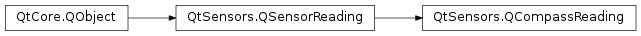

QCompassReading¶
Synopsis¶
Functions¶
- def
azimuth() - def
calibrationLevel() - def
setAzimuth(azimuth) - def
setCalibrationLevel(calibrationLevel)
Detailed Description¶
ThePySide2.QtSensors.QCompassReadingclass represents one reading from a compass.
QCompassReading Units¶
The compass returns the azimuth of the device as degrees from magnetic north in a clockwise direction based on the top of the device, as defined by
QScreen.nativeOrientation. There is also a value to indicate the calibration status of the device. If the device is not calibrated the azimuth may not be accurate.Digital compasses are susceptible to magnetic interference and may need calibration after being placed near anything that emits a magnetic force. Accuracy of the compass can be affected by any ferrous materials that are nearby.
The calibration status of the device is measured as a number from 0 to 1. A value of 1 is the highest level that the device can support and 0 is the worst.
-
class
PySide2.QtSensors.QCompassReading(parent)¶ Parameters: parent – PySide2.QtCore.QObject
-
PySide2.QtSensors.QCompassReading.azimuth()¶ Return type: PySide2.QtCore.qreal
-
PySide2.QtSensors.QCompassReading.calibrationLevel()¶ Return type: PySide2.QtCore.qreal
-
PySide2.QtSensors.QCompassReading.setAzimuth(azimuth)¶ Parameters: azimuth – PySide2.QtCore.qrealSets the
azimuthof the device.See also
PySide2.QtSensors.QCompassReading.azimuth()QCompassReading Units
-
PySide2.QtSensors.QCompassReading.setCalibrationLevel(calibrationLevel)¶ Parameters: calibrationLevel – PySide2.QtCore.qrealSets the calibration level of the reading to
calibrationLevel.
© 2018 The Qt Company Ltd. Documentation contributions included herein are the copyrights of their respective owners. The documentation provided herein is licensed under the terms of the GNU Free Documentation License version 1.3 as published by the Free Software Foundation. Qt and respective logos are trademarks of The Qt Company Ltd. in Finland and/or other countries worldwide. All other trademarks are property of their respective owners.